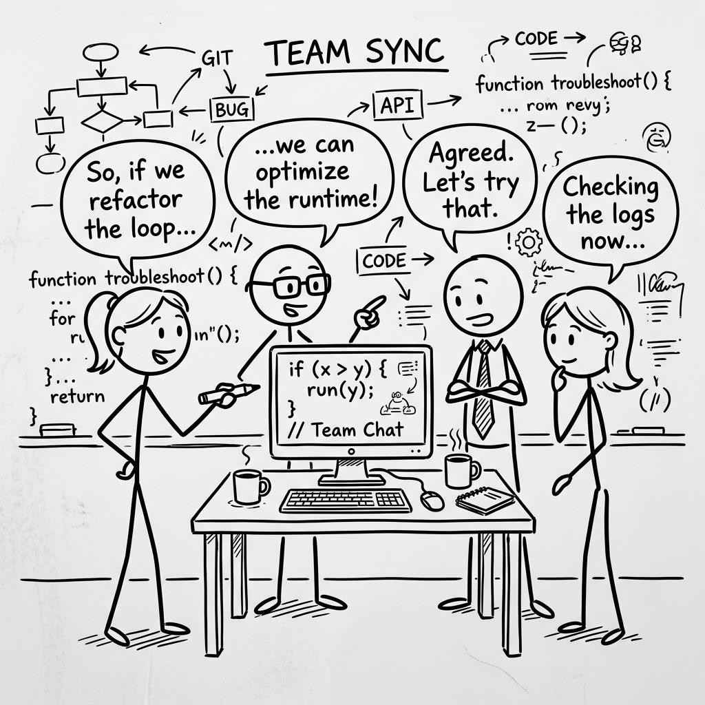
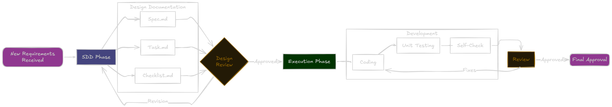
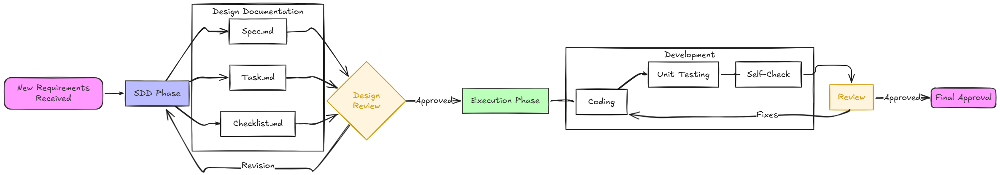

Overview
Spec-Driven Development is a structured approach to building complex features. Instead of jumping straight into coding, it creates three planning documents first: what you want to build, how it should work, and the steps to build it. This gives the AI agent much better context to work with, leading to cleaner code and fewer mistakes down the line.

When to Use Spec Mode
Spec mode excels at:
- Complex, multi-file features requiring architectural decisions
- Features that need clear requirements and acceptance criteria
- Cross-cutting changes affecting multiple system components
- Features requiring design documentation for team alignment
Spec mode is not ideal for:
- Simple, single-file changes (use Vibe mode instead)
- Quick bug fixes or typos
- Exploratory prototyping where requirements are unclear
Research shows that addressing issues during the planning phase is 5 to 7 times less costly than resolving them during implementation. Spec mode bakes this principle into your AI-assisted workflow.
The Spec Workflow
When you initiate a /spec, the agent guides you through a structured process:


Click to enlargeHow It Works
Type /spec in the chat box to activate Spec mode:
TRAE will ask you follow-up questions to understand what you want to build. Once it has enough context, it generates three .md files (Markdown documents — simple text files that are easy to read and edit):
- requirements.md — What you want to build and how you'll know it's done
- design.md — How it should work and fit into your project
- tasks.md — Step-by-step instructions for building it
Review the three files, make any changes you'd like, then approve them. TRAE will execute the tasks one by one, and you can track the progress as it builds your feature.
Vibe vs Spec: Choosing the Right Mode
Conversational and interactive. Best for simple, focused changes with fast iteration. No documentation generated — relies on steering documents for context.
Structured and document-driven. Best for complex, multi-file features. Generates requirements, design, and tasks for thorough planning upfront. Creates an audit trail for the team.